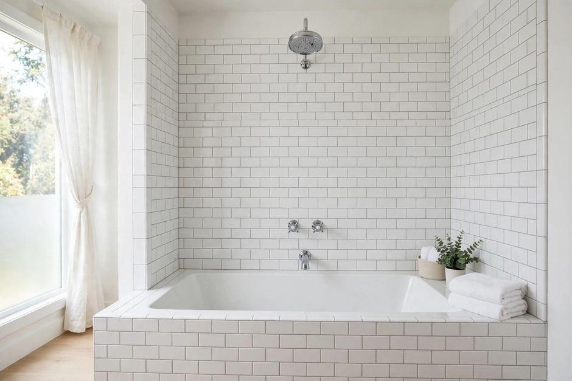
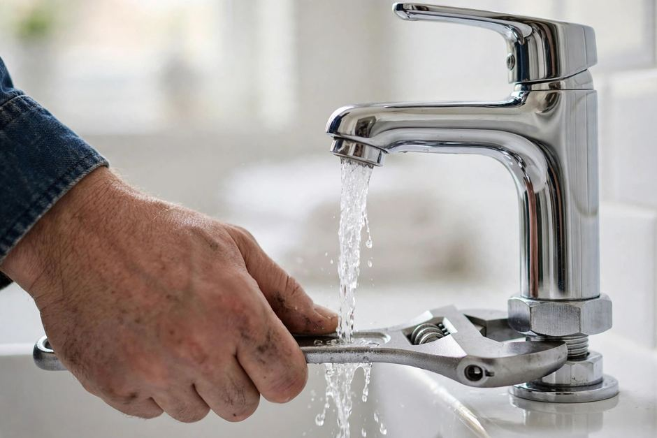

Shower Services
Shower Repair in Belleville, IL
Shower problems range from dripping valves and weak spray to slow drains and leaks behind walls. This page covers repair and installation in one place, including valves, showerheads, drains, and enclosures. Hinkle Plumbing Company assesses showers in Belleville, IL, with bathtub repair context for combination units.
1610 W Main St, Belleville, IL 62220Monday through Friday, 8:00 AM to 4:30 PM(618) 677-6556
What This Service Covers
Shower Repair Scope in Belleville
Shower scope covers valves, showerheads, drains, enclosures, and installation planning for bathrooms in Belleville, IL. Each part below is assessed on its own findings, and installation is discussed where shower condition no longer serves the bathroom.
Shower Valve Repair
Shower valve repair covers drips, temperature fluctuation, and handle faults in single and dual-control valves. Cartridge and seal findings shape repair scope, and temperature behavior is observed during assessment.
Showerhead Repair and Replacement
Showerhead work covers weak spray, uneven patterns, and mineral deposits on spray faces. Spray findings and mineral deposits are reviewed, and cleaning or replacement reflects the condition found.
Shower Drain Repair
Shower drain repair covers slow drainage, trap buildup, and drain seal leaks below the shower floor. Drain flow and trap findings are reviewed, and access context shapes repair sequencing.
Shower Leak Review
Shower leak review covers valve leaks behind walls, drain leaks below floors, and enclosure leaks at doors and seals. Moisture patterns help narrow the source, and findings shape repair scope.
Enclosure Seal Work
Enclosure seal work addresses door, glass, and curb sealing failures that allow water onto bathroom floors. Seal condition and floor moisture patterns are reviewed, and sealing scope reflects the extent of findings.
About Hinkle Plumbing Company
Shower Work From a Belleville Base
Shower repair and installation in Belleville bathrooms is handled by Hinkle Plumbing Company from its West Main Street office. Valve, showerhead, drain, and seal findings are reviewed together, and scope is discussed before work begins.
Showers combine pressurized supply, temperature control, drainage, and enclosure sealing in daily use, and faults can affect walls and floors beyond the shower itself. Valve wear shows as drips or temperature shifts, while drain faults show as standing water. Hinkle Plumbing Company reviews each part on its findings, and faucet repair context helps where sink faucets share supply patterns. Scope is discussed before work begins.

How we workImage showing shower valve work in a bathroom in Belleville.
How Assessment Works
Shower Assessment Steps
The steps flex with the condition of the job, but the sequence stays the same.
Discuss Symptoms
Drips, temperature shifts, weak spray, slow drainage, and moisture patterns are discussed to narrow the fault. Symptom details help separate valve faults from showerhead, drain, and sealing concerns.
Test Valve and Spray
Valve handle movement, temperature behavior, and showerhead spray patterns are tested. Test findings shape cartridge, seal, and showerhead discussion, and supply patterns are observed during testing.
Check Drain Flow
Drain flow, trap condition, and standing water patterns are checked. Drain findings shape clearing scope, and access context below the shower floor is reviewed where relevant.
Check Seals and Moisture
Enclosure seals, grout context, and moisture patterns on nearby walls and floors are checked. Seal findings shape sealing scope, and moisture observations are shared where damage is suspected.
Repair or Install
Repair or installation proceeds on the findings, with valve, spray, drain, and sealing checked after work. Findings are discussed, and operation observations are shared so the shower is understood after completion.
Repair Approaches
Shower Repair Methods
Shower methods reflect the fault found, the valve type, and access conditions behind shower walls. Options below are discussed during assessment, and suitability is confirmed for the specific bathroom rather than assumed.
Cartridge Replacement
Cartridge replacement addresses shower valve drips and temperature control faults. Cartridge type is matched to the valve, and mineral deposits on valve seats are reviewed during the work.
Showerhead Cleaning
Showerhead cleaning addresses mineral deposits that restrict spray openings and distort patterns. Deposit findings shape cleaning scope, and replacement is discussed where cleaning does not restore spray patterns.
Drain Clearing
Drain clearing addresses hair and soap buildup that slows shower drainage. Clearing method reflects blockage findings and trap access, and drain flow is checked after clearing.
Valve Seal Work
Valve seal work addresses leaks at handles and escutcheons where seals have worn. Seal condition is reviewed, and replacement seals are matched to the valve type and handle configuration.
Full Shower Replacement
Full replacement suits showers with persistent valve faults, drain concerns, or enclosures that no longer serve the bathroom. Rough-in, drain, and waterproofing findings shape installation planning.
Access Planning
Access planning covers reaching valve and drain connections through walls or access panels. Panel location and wall condition shape repair sequencing, and restoration needs are discussed during planning.
Common Patterns
When Shower Repair Is Discussed
Shower concerns often appear as temperature shifts, weak spray, or standing water during use. The patterns below describe common reasons for assessment, without describing a specific property or job.

Shower Temperature Shifting During Use
A common call describes shower temperature shifting when other fixtures are used, with valve control and supply patterns in question. Assessment reviews valve cartridge findings, handle behavior, and supply patterns to narrow the cause. Repair scope reflects valve findings, and showerhead and drain findings are reviewed alongside valve findings before scope is set. The pattern is reviewed with related systems, and findings are discussed before work begins.
Water Standing in the Shower Floor
A common call describes water standing on the shower floor during use, with drain flow and trap condition in question. Assessment checks drain flow, trap buildup, and floor slope context to narrow the cause. Clearing method reflects blockage findings, and seal and moisture patterns are reviewed alongside drain findings. Observations from assessment are shared, and scope reflects the combined findings for the space.
Signs to Note
Shower Signs That Call for Assessment
Most calls fall into a few patterns. Knowing which pattern applies decides what the visit involves.
Shower Dripping When Off
Dripping when the valve is closed can signal cartridge or seal wear inside the valve. Drip patterns and handle behavior are reviewed, and internal findings shape repair scope. Observations shape the repair discussion.
Weak or Uneven Spray
Weak or uneven spray can reflect showerhead deposits, valve restriction, or supply findings. Spray patterns and valve findings are reviewed together, and showerhead condition is checked during assessment. Findings are reviewed during assessment.
Standing Shower Water
Standing water during use can reflect trap buildup or drain restriction below the shower. Drain patterns and trap findings are reviewed, and clearing method reflects blockage findings. Findings guide the next steps.
Moisture Beyond the Enclosure
Moisture beyond the enclosure can signal seal, valve, or drain leaks affecting surrounding surfaces. Moisture patterns help narrow the source, and findings shape sealing or repair scope. Assessment findings guide the response.
Scope Factors
What Shapes Shower Work Scope
Valve type, access, and enclosure findings shape shower scope.
Repair Versus Installation
Part-level repair and full shower installation carry different scope, and shower condition findings shape the choice. Findings are discussed by phone, and installation planning includes valve, drain, and enclosure context.
Access and Wall Work
Access panel availability, wall condition, and tile context affect repair sequencing. Access findings are reviewed during assessment, and restoration needs are discussed where openings are required. Findings shape the scope discussion.
Drain and Seal Work
Drain clearing, trap findings, and enclosure sealing add scope where concerns are found. Drain and seal findings are included in the discussion, and readers are invited to call to discuss scope for a specific bathroom.
Reviews from Google
What Customers Say on Google
★★★★★
“Very prompt and responsive, the worker was friendly and informative! Will use this company again!”
★★★★★
“Don did an outstanding job for me when I needed him and highly recommend his business”
★★★★★
“Rated 5.0 out of 5 across 3 Google reviews, all five stars.”

Why does shower temperature shift during use?
Temperature shifts can reflect valve cartridge findings, supply pressure interaction with other fixtures, or valve wear. Valve behavior and supply patterns are reviewed together, and findings shape whether cartridge work or broader supply discussion is needed. Assessment findings are discussed plainly, and related observations are reviewed together.
What causes weak shower spray?
Weak spray can reflect showerhead mineral deposits, valve restriction, or supply findings for the bathroom. Showerhead condition and valve findings are reviewed, and cleaning, cartridge work, or supply discussion follows from the findings. Findings are reviewed together, and household observations are included in the discussion.
Does this page cover shower installation?
Yes. Installation covers valve, showerhead, drain, and enclosure connections for new showers. Rough-in context, drain location, and waterproofing context shape installation planning, and scope is discussed before work begins. Related system findings are reviewed together, and observations shape the response.
What affects the scope of shower repair or installation?
Valve type, showerhead and drain findings, enclosure condition, access constraints, and moisture patterns shape the scope. Each factor is reviewed during assessment, and readers are invited to call (618) 677-6556 to discuss scope for a specific bathroom. Findings are discussed by phone before work is scheduled.
Mon–Fri 8:00 AM–4:30 PM
Discuss Shower Repair in Belleville
Call (618) 677-6556 during Monday through Friday, 8:00 AM to 4:30 PM to discuss shower repair in Belleville. Closed Saturday and Sunday. Valve, spray, and drain findings are reviewed during assessment.

Talk with the local team
Request Shower Repair & Installation
Call (618) 677-6556 during office hours, Monday through Friday, 8:00 AM to 4:30 PM. Tell us what is happening and we will talk through the next step.